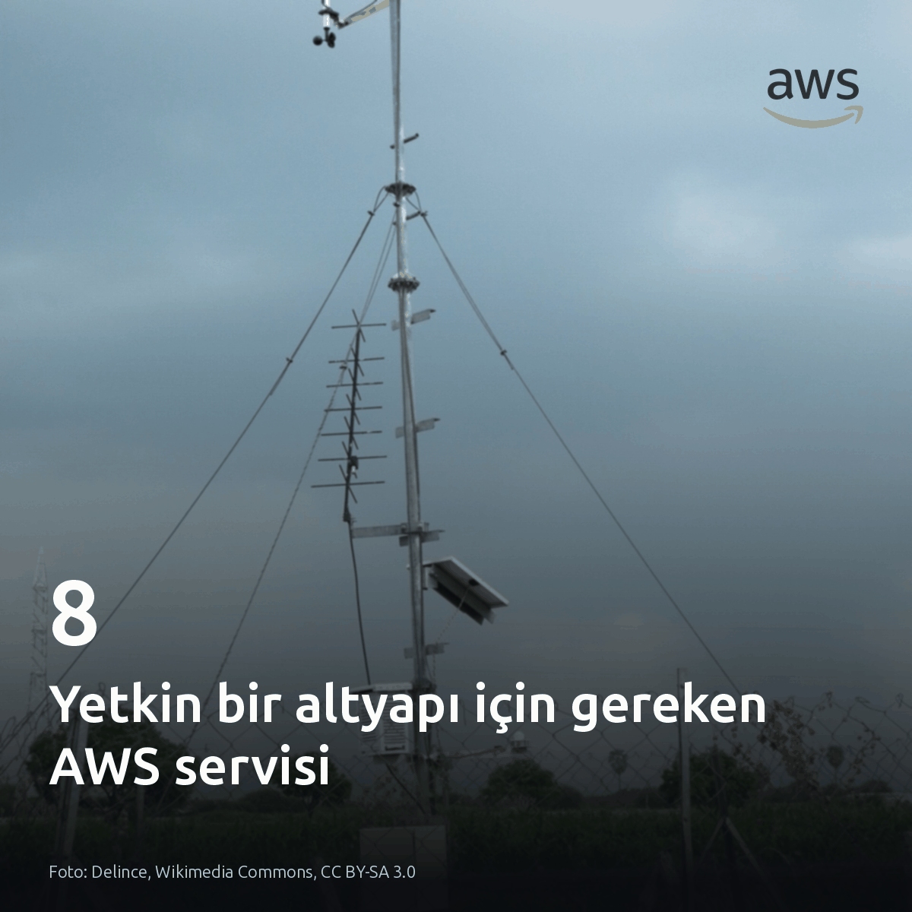
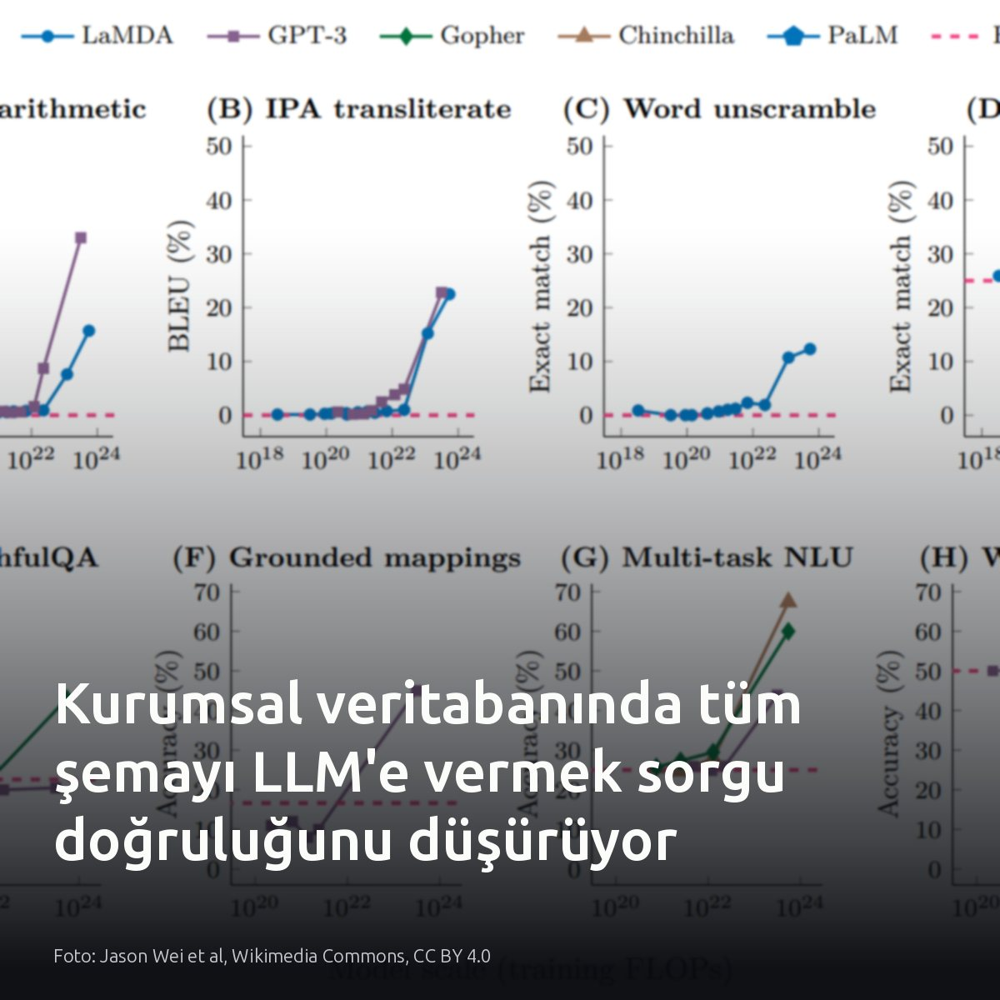
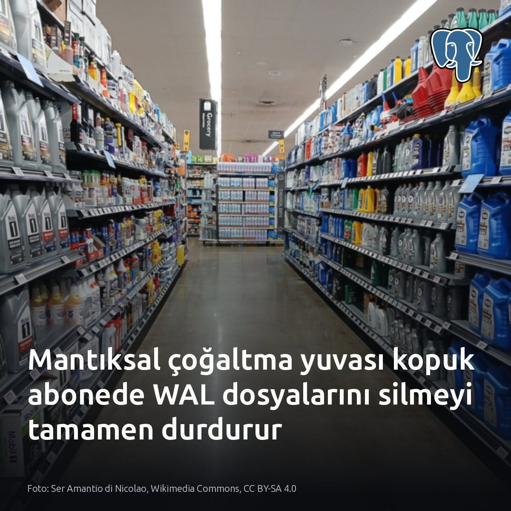
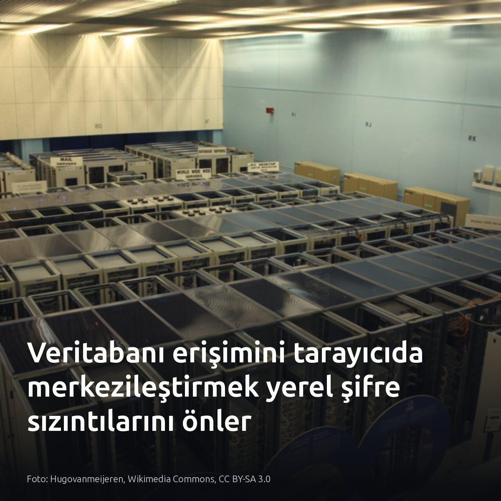
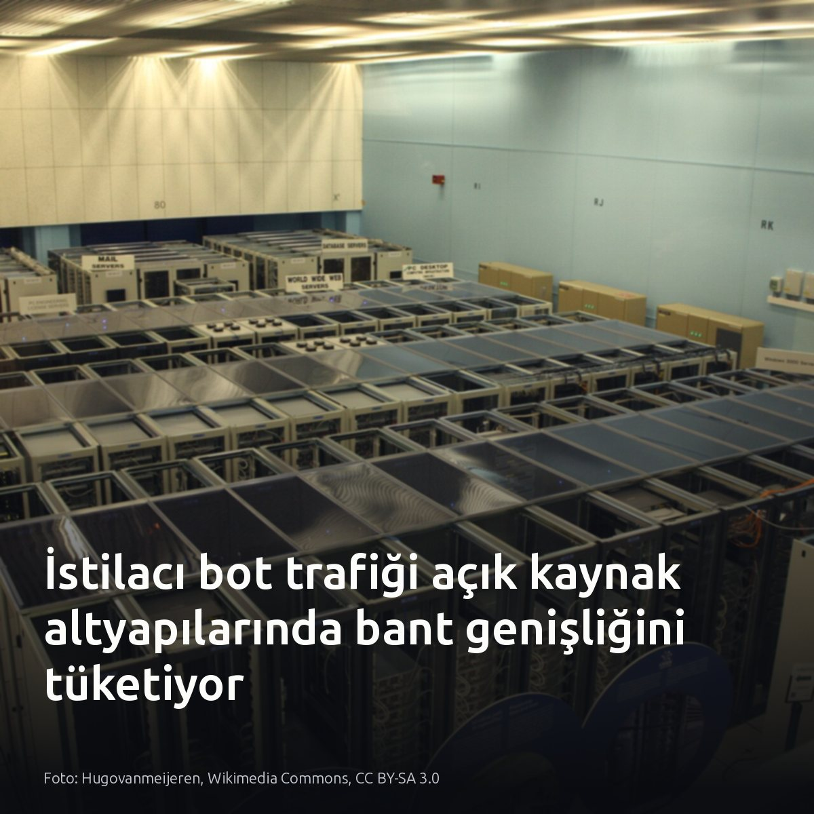

Metni kopyala, kartı indir, LinkedIn'de yapıştır. Bağlantılar gönderiye değil ilk yoruma.

AWS kataloğundaki 200 servisten yalnızca 8 tanesi altyapı sorunlarının yüzde 90'ını çözmeye yetiyor. Gereksiz çeşitlilik mimari yüktür. Çekirdek bileşenlerde uzmanlaşmak, dağıtım karmaşıklığını ve işletim maliyetini doğrudan düşürür. Sağlam bir sistem, servis yığınından değil sade bir mimariden doğar. #aws #devops #cloudinfrastructureKartı indir
Kaynak ve detaylı okuma: Görsel ve analiz kaynağı: DevopsLesson (Medium) [S1]-[S5] https://medium.com/@devopslesson/aws-for-devops-engineers-the-only-services-you-actually-need-to-know-first-e188aeacd8fe?source=rss------devops-5

Tüm DDL şemasını modele yüklemek doğruluğu artırmıyor; canlı testlerde 10 kontrolün 7'si başarısız oldu. Gereksiz tablolar bağlamı kirletiyor. Büyük şemalarda yüzlerce tabloyu isteme yığmak halüsinatif JOIN sorgularına yol açarken, schemagate modeli sadece yetkili ve ilgili tablolarla sınırlıyor. SQLite üzerinde 445 testi geçen yapılar, canlı ortamdaki lehçe farklarında ve katalog filtrelerinde kolayca dağılıyor. Doğru SQL geniş bağlamdan değil, sıkı filtrelenmiş katalogdan çıkıyor. #postgresql #database #texttosqlKartı indir
Kaynaklar ve test detayları: • Görsel kaynağı: Jason Wei et al, Wikimedia Commons, CC BY 4.0 • Ashish Sinha, 'What running my text-to-SQL library against a real Oracle database found': https://medium.com/@sinha.ashish.4.u/what-running-my-text-to-sql-library-against-a-real-oracle-database-found-0c7dd8b08b3d?source=rss------database-5

Kopuk bir abone, 16 MB boyutundaki segmentlerle pg_wal dizinini disk dolana dek büyütebilir. Sebep çoğaltma yuvasının çalışma mekanizması. PostgreSQL, kesinti sonrasında güvenli biçimde yeniden başlamayı garanti etmek amacıyla tüketilmemiş log dosyalarını silmeyi durdurur. Abone çevrimdışı kaldığında yuvanın restart_lsn konumu ilerlemez; sunucu üretilen tüm değişiklik kayıtlarını yerel diskte saklamaya devam eder. Bu aşamada max_wal_size parametresi için tanımlanan sınırlar yuvanın ihtiyaç duyduğu WAL segmentlerinin silinmesini sağlamaz. Segmentlerin uzak arşive başarıyla kopyalanmış olması da pg_wal dizinindeki yerel disk alanını temizlemez. Boyut sınırı konulmayan her çoğaltma yuvası, birincil veritabanını disk tükenmesi nedeniyle doğrudan durma noktasına getirir. #postgresql #dba #replicationKartı indir
Kaynaklar: - [S1, S2, S3, S4, S5] https://medium.com/@mydbopsdatabasemanagement/why-postgresql-wal-files-keep-growing-during-logical-replication-56b16e44ccb3?source=rss------postgresql-5 - [S6] https://www.morling.dev/blog/postgres-replication-slots-confirmed-flush-lsn-vs-restart-lsn/ - Görsel kaynağı: Ser Amantio di Nicolao, Wikimedia Commons, CC BY-SA 4.0

Tarayıcı tabanlı SQL editörleri ile masaüstü istemciler arasındaki asıl fark konfor değil, kimlik güvenliğidir. Masaüstü araçlar bağlantı bilgilerini yerel disklere dağıtırken, self-hosted LibreDB Studio yetkilendirmeyi merkezi sunucuda izole eder. Yerel şifreler denetimden kaçar. İzole derin analizde masaüstü araçlar, paylaşımlı kümelere güvenli erişimde ise merkezi tarayıcı seçilmeli. İstemci makinelerindeki pgpass dosyalarında unutulan veritabanı şifrelerine bakın. #postgresql #database #infosecKartı indir
Kaynaklar: - Görsel: Hugovanmeijeren, Wikimedia Commons, CC BY-SA 3.0 - LibreDB Studio: https://www.reddit.com/r/PostgreSQL/comments/1wa568c/libredb_studio_an_open_source_selfhosted_sql_ide/

git.kernel.org altyapısında 14 CPU çekirdeği yalnızca kazıma botlarına HTML commit derliyor. Sistem, günlük 6 milyon bot isteğine meşru erişimden çok işlemci harcıyor. Konut ve mobil proxy havuzlarını kullanan tarayıcılar IP başına yalnızca 4 ya da 5 istek gönderip hızla yeni adrese geçiyor. Klasik IP engeli çalışmıyor. Loglarda render maliyetini ve IP rotasyonunu denetlemek şart. Bu risk, dışa kapalı depolarda ve kimlik doğrulamalı servislerde geçerli değil. #linux #sysadmin #infrastructureKartı indir
Kaynaklar ve detaylı okumalar: • Görsel: Hugovanmeijeren, Wikimedia Commons, CC BY-SA 3.0 • Konstantin Ryabitsev (git.kernel.org): https://people.kernel.org/monsieuricon/creepy-crawlies • Simon Willison: https://simonwillison.net/2026/Sep/7/creepy-crawlies/ • Kernel altyapı duyurusu: https://social.kernel.org/notice/AsgziNL6zgmdbta3lY
{kind=link}
{kind=link}
{kind=link}
{kind=link}
{kind=link}